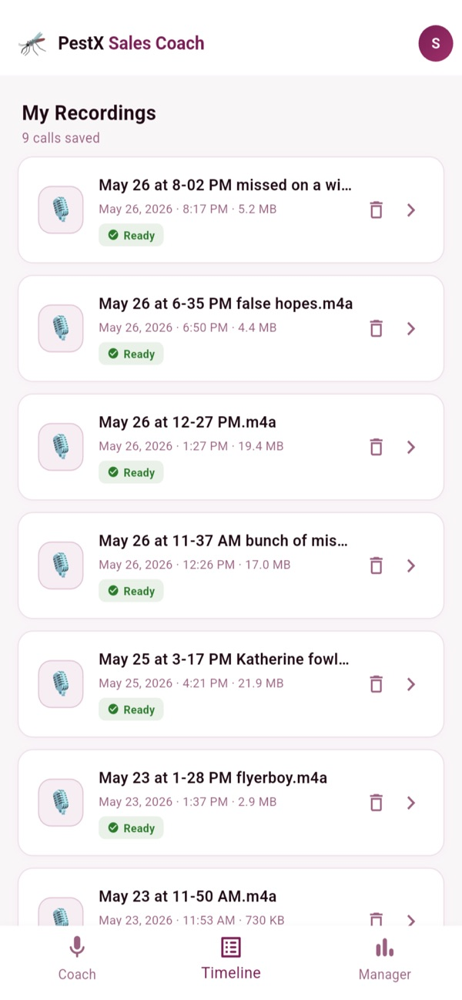
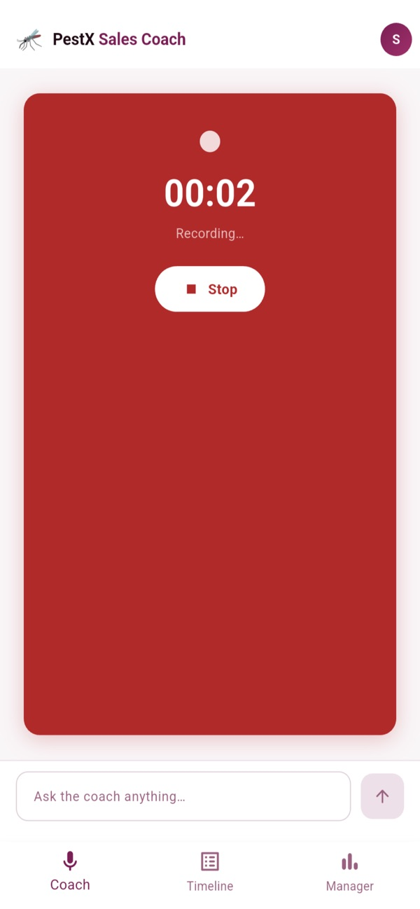
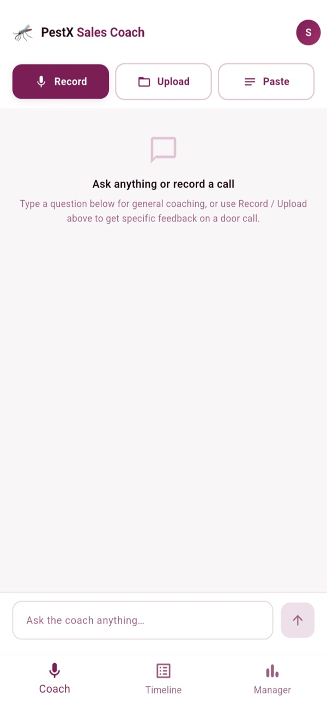
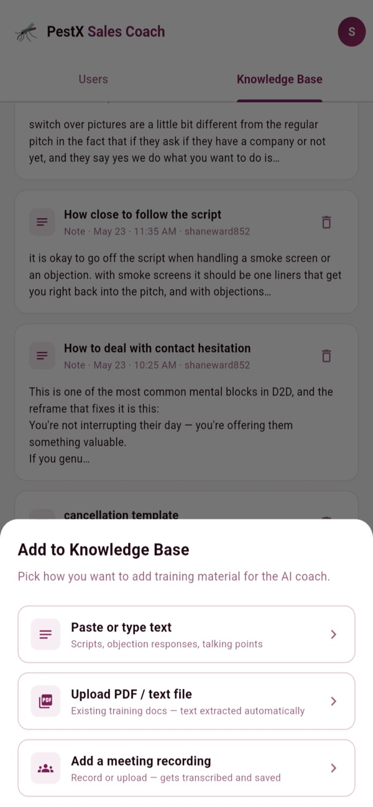

PestX Sales Coach is the AI training tool built for door-to-door pest control reps. Record or upload any door call and get instant, detailed coaching from an AI trained on your team's scripts, objection responses, and best practices.
Part
Sales coaching app
Built with
Flutter, Firebase
AI
Anthropic API
Status
On the App Store
Screens

Call history

Recording a call

Ask the coach

Manager knowledge base
Screenshots from the App Store listing.
Specifications
App
Flutter and Firebase
Coaching
Scored feedback on tone, objection handling, and pitch flow. Reps can also ask the coach anything: scripts, objections, roleplay.
History
Every call kept with its transcript and coaching notes
Managers
Dashboard to review rep performance, and a knowledge base of scripts, meeting notes, and training files that coaches every rep
Pitch pipeline
Audio upload, silence trimming, transcription, then AI coaching against weighted company training material
AI
Anthropic API through a Node/Express proxy
Stores
Play Store production access. App Store review requirements: EULA gate, content filtering, user blocking.